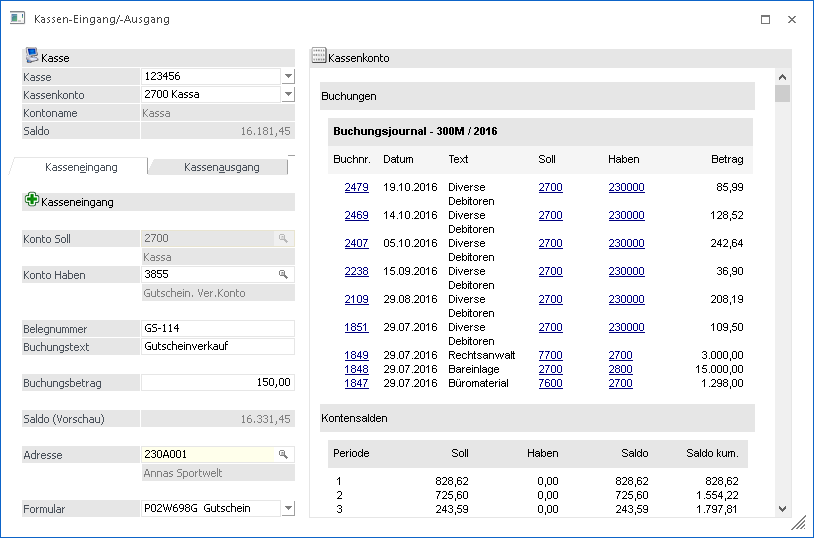

In der WinLine FAKT gibt es den Menüpunkt
1 Erfassen
1 Kassen- Eingang/Ausgang
bzw. Kann der Menüpunkt im Kassencockpit mit den Einträgen "Kassen Eingang" bzw. "Kassen Ausgang" geöffnet werden.
Damit ist die rasche und einfache Erfassung von Kassen- Ein- und Ausgangs-Buchungen möglich.
Es können bzw. werden nur B-Buchungen erzeugt und zusätzlich werden keine Offenen Posten verwaltet.

Ø Konto Soll
Es wird das Kassenkonto gewählt, welches oben im Feld "Kassenkonto" gewählt wurde.
Ø Konto Haben
Hier kann z.B. beim Kasseneingang das Gegenkonto angegeben werden. Aus dieser Konstellation bildet sich der Buchungssatz.
Ø Belegnummer
Hier kann eine beliebige Belegnummer eingetragen werden, welche am Formular angedruckt werden kann.
Ø Buchungstext
Dieser Buchungstext kann ebenfalls zum Andruck am Formular verwendet werden und wird zusätzlich als Buchungstext bei der B-Buchung übergeben.
Ø Saldo (Vorschau)
Zeigt eine Vorschau des Saldos an, wie dieser nach Absetzung der eingegebenen Buchung wäre.
Ø Adresse
Hier kann ein Kunde bzw. Interessent gewählt werden. Diese Information kann am Formular angedruckt werden und wird gleichzeitig in das Feld Notiz der jeweiligen Buchung übergeben.
Ø Formular
Es kann für den Ausdruck aus versch. Formular mit dem PDI "P02W698" gewählt werden. Im Downloadbereich der mesonic Website stehen hier einige Formular im Bonformat (80mm) zur Verfügung.
Hinweis:
Die abgesetzten Buchungen über diesen Menüpunkt werden nicht an das Datenerfassungsprotokoll DEB übergeben.
Hinweis:
Beim Öffnen des Menüpunktes wird geprüft, ob im Menüpunkt Kassenstamm bereits eine Kassenidentifikationsnummer und ein FIBU-Konto hinterlegt sind und ob der Benutzer laut Kassenstamm die Berechtigung hat. Ein Administrator kann den Menüpunkt auch ohne entsprechende Hinterlegung im Kassenstamm aufrufen.
Im Kasseneingang/-ausgang können nur Gegenkonten verwendet werden, welche im Menüpunkt Kassen Stammdaten als Gegenkonto eingetragen sind. Sind keine Gegenkonten eingetragen, so können alle Konten, die keine Kostenart, keine Fremdwährung und keine Sachkonten-OP hinterlegt haben, als Gegenkonto verwendet werden.
Sind Gegenkonten definiert worden, so wird beim Focus setzen in dem entsprechenden Feld die Autovervollständigung mit den definierten Gegenkonten aufgerufen.
Der Buchungstext kann bereits im Kassenstamm-Menüpunkt definiert werden, dieser ist aber bei der Eingabe editierbar.
Nachdem Absetzen der Buchung wird eine Quittung ausgedruckt, die die erfassten Werte beinhaltet.